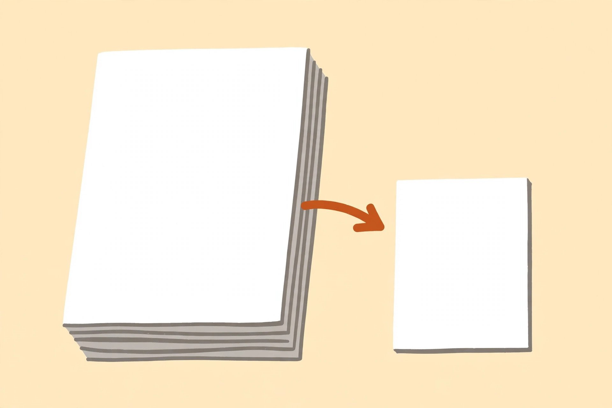

PDF Tools
Thirteen PDF tools that run entirely in your browser. The tools never send your files anywhere: they run on your device, and the page is blocked from uploading anything.
Why
Free PDF sites ask you to upload documents to someone else's server just to merge two files. I wanted the same tools without handing over the files. My family kept hitting the same wall: a form to fill, a file too big to send, a scan that needed rotating. Each one meant trusting a stranger's server with a document that mattered. The fix was to move the work into the browser itself, where the file never has to leave.
What I built
- Thirteen tools: edit PDF, fill and sign, compress (including "get it under N MB"), merge, organize pages, split, images to PDF, PDF to images, convert images, add password, remove password, remove hidden metadata, and PDF info.
- A PDF-to-document editor that turns a PDF's content into text you can edit and reflow.
- It runs on qpdf compiled to WebAssembly inside Web Workers, so the page stays responsive. Two separate PDF engines check every output file.
- It works on phones, installs like an app and works offline.
- The privacy guarantee is enforced by the browser, not just promised in copy. The page carries a security policy that refuses any connection to another site, so even a bug could not upload a file. Once the page has loaded, airplane mode changes nothing.
The Claude-powered assistant is a separate piece, and it works differently. It lives on its own page, it is for my family only, it needs an access code, and it runs on a Cloudflare Worker. The thirteen tools never touch it, and the assistant never sees a file unless someone opens that page and pastes something in. Keeping the two apart is the whole point.

What was hard
The hard part was not any single tool. It was making thirteen tools share one engine without sharing one failure. qpdf in WebAssembly is fast, but a bad file can still hang a tab, so the work runs in Web Workers and the page stays responsive while a file is processed. Every output gets checked by a second, independent PDF engine, because a tool that silently corrupts a document is worse than a tool that fails loudly. HEIC photos from iPhones were their own problem: the conversion has to happen on the device too, or the privacy claim falls apart. The editor was the longest job. Turning a PDF back into editable text means rebuilding paragraphs, headings and fonts from layout data, and complex layouts still get simplified. That limit is stated on the page, not hidden.
Where it's at
Live and in use, by my family first and anyone else who finds it. The site is the one project on this page with a public link and a public repo, because the privacy story only holds up if people can read the code and the policy for themselves.
Want the full story?